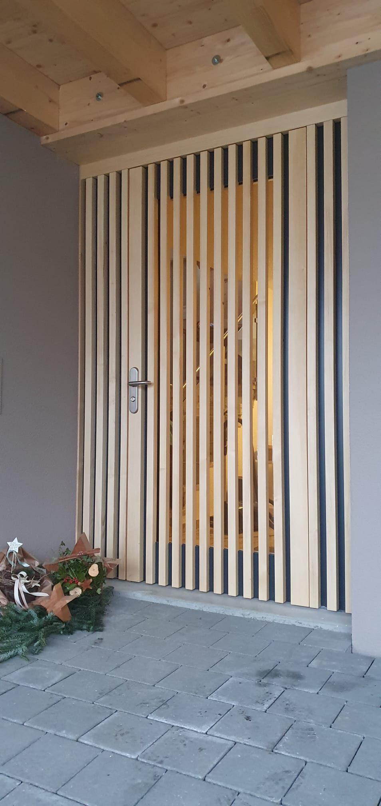
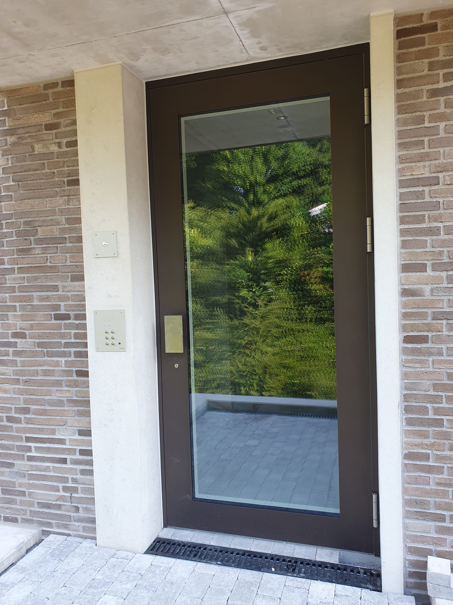

Schreinerei · Frümsen
BERNHOF-Vetsch AG
Der Eingang
ist erst der
Anfang.
Haustüren, Innentüren und Innenausbau aus Frümsen.
Türen entdecken
Holzhandwerk / Sennwald
Türen
Ein Übergang mit Charakter.
Haustüren und Innentüren sind der Schwerpunkt. Auch Brandschutz-VKF-Türen EI 30 gehören zum Angebot.

Über die Tür hinaus
Schreinerei für Räume, die funktionieren.
InnenausbauSchränke & GarderobenWohnungs-ServicearbeitenGlasbruch-Reparaturen
Kontakt / im Hof 3 · 9467 FrümsenBERNHOF-Vetsch AG
Was soll Ihre Tür können?
081 757 12 73